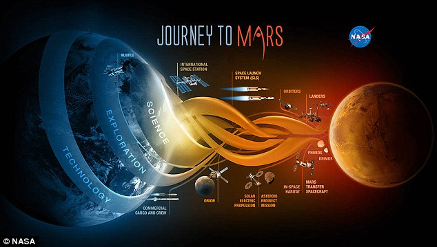
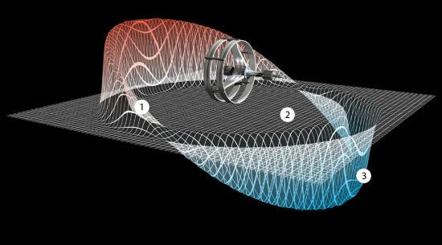

Attualmente impossibile ma, nei progetti della NASA
Un giorno, potrebbe essere una realtà. Un ricercatore dell’ente spaziale americano, infatti, è convinto che sia possibile utilizzare un rivoluzionario sistema di propulsione grazie al quale i viaggi spaziali diventerebbero quasi una gita da week-end. Andare su Marte in poco più di 72 ore e raggiungere la più vicina stella in pochi anni di viaggio secondo il professor Philip Lubin, docente di fisica all’Università Santa Barbara, in California, è fattibile. Con le attuali tecnologie, per un percorso di sola andata verso il pianeta rosso, ci vogliono circa sei mesi ma lo scienziato è convinto che sia possibile accorciare di gran lunga i tempi:
Lo scienziato americano ha vinto il Nasa Innovative Advanced Concepts, un premio che gli ha permesso di sviluppare il progetto di un motore a energia fotonica, un propulsore che dovrebbe funzionare su un veicolo spaziale basato sul principio delle vele solari. Lubin ha illustrato con un video il progetto di “propulsione fotonica” al quale lavora. Non è una novità, ma finora è stato considerato più teoria che altro. Questo sistema, usa particelle di luce per far muovere i velivoli nello spazio. I fotoni, pur privi di massa, possiedono energia e una quantità di moto (il "momentum") che si possono trasformare in spinta. Se si costruisce un’enorme vela che riflette la luce, secondo lo scienziato, si potrebbe effettivamente utilizzare i fotoni per far accelerare un'astronave usando enormi laser posizionati sulla Terra.
“Così, una sonda robotica pesante 100 chilogrammi spinta da un laser dalla potenza di 50-70 gigawatt potrebbe viaggiare all’1,5% della velocità della luce potrebbe e arrivare su Marte in 3 giorni”, ha spiegato. Un mezzo con equipaggio umano, decisamente più ingombrante, avrebbe invece bisogno di un mese per compiere lo stesso tragitto- un quinto del tempo preventivato ora. Senza contare che la navicella- sgravata da gran parte del propellente chimico- risulterebbe molto più leggera ed economica.
Tutto questo grazie alla propulsione fotonica. Una sorta di cannone laser che spingerebbe una vela gigante nella direzione del pianeta rosso. L'idea dello scienziato prevede di utilizzare un potente laser realizzato a Terra o in orbita terrestre e il flusso sparato da questa sorta di cannone a fotoni spingerebbe l'astronave come l'Enterprise di Star Trek. Un’ipotesi fantascientifica? Per Lubin, no. «Siamo talmente convinti che ciò è realizzabile - ha dichiarato ancora il professore alla University of California di Santa Barbara - che la fantascienza potrebbe diventare presto realtà».Oltre a promettere un viaggio di tre giorni su Marte, il pianeta rosso che ad occhio nudo si può vedere di sera nel cielo, grazie alla sua vicinanza con la terra ed al suo colore rossastro, Lubin dichiara che: «Con un sistema propulsivo del genere si potrebbero raggiungere le più vicine stelle, ma anche esopianeti, in pochi anni». “Non c’è nessun motivo per il quale non si possa farlo”, ha spiegato nel filmato di NASA 360. Attenzione però: il sistema di propulsione fotonica (se mai sarà realizzato) è ideale senza equipaggio umano, non solo per ridurre il peso e quindi aumentare la velocità, ma anche perché le macchine sono più adatte ad esplorare lo spazio profondo, non hanno bisogno di ossigeno, acqua, cibo… non invecchiano, non si ammalano e non hanno problemi neanche se spinte a velocità tanto elevate.
Viaggiare nello spazio profondo
Spedire le Intelligenze Artificiali al di là del sistema solare avrebbe parecchi lati positivi. Con loro a bordo di un’astronave che procede al 26% della velocità della luce avremmo molte speranze di arrivare, in tempi relativamente brevi, su pianeti alieni potenzialmente abitabili; tuttavia ricevere dai robot esploratori un messaggio da luoghi tanto remoti della galassia non sarebbe affatto facile. Un’ altra questione tecnica da affrontare e superare. “Le implicazioni di questo viaggio nello spazio profondo sarebbero enormi per l’Umanità: è giunta l’ora di dare il via a questo percorso lontano da casa”, ha inoltre dichiarato Lubin. L’ipotesi di utilizzare i fotoni come mezzo di propulsione non è la sola idea sorprendente; aumentano, infatti, i progetti scientifici per rendere sempre più rapida l'esplorazione spaziale che, in un futuro neanche troppo lontano, è considerata necessaria per la sopravvivenza del genere umano.
Velocità dei razzi
a confronto con la velocità della luce
Le sonde Helios
possiedono il record dei razzi piu veloci 253,000 km/h
secondo il professor Lubin si può raggiungere 26%

Ad esempio, Ryan Weed, parlando l'anno scorso alla manifestazione WIRED 2015, ipotizzò la realizzazione di un “razzo ad antimateria” che realizzarebbe un giro completo della Terra in pochi secondi raggiungendo Marte in poche settimane. Primo obiettivo sarebbe Alpha Centauri, nel sistema stellare a noi più vicino, a circa 4.3 anni luce, dove si potrebbero trovare due pianeti simili al nostro; con quel motore basato sull’antimateria, secondo Weed potremmo viaggiare alla folle velocità di 72 milioni di miglia all’ora, circa 115 milioni di km orari. Incredibile? Sì. Impossibile? Un giorno, forse no.

Fisica
Dalla crisi della fisica classica fino ai fotoni
Scienze
La presenza dell'acqua "proibita" su Marte
Inglese
Robinson Crusoe on Mars?
Storia
L'inizio della corsa allo spazio.